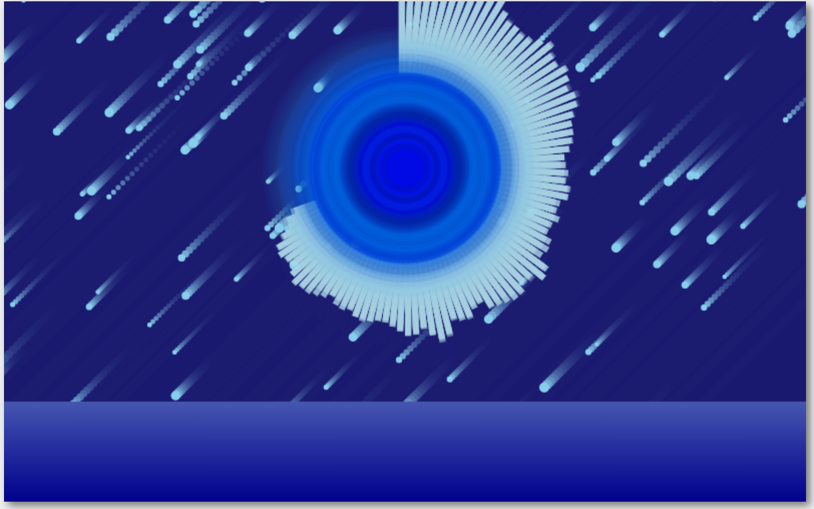

Comet Audio Visualizer
Welcome to the Comet Audio Visualizer! This is an audio visualizer that has multiple functions, including having comets fall in the background. More comets fall as the songs get louder. There are multiple options to control the various effects that appear on the screen, including adding extra effects to the falling comets.

©2022 Comet Audio Visualizer by Allen Ko